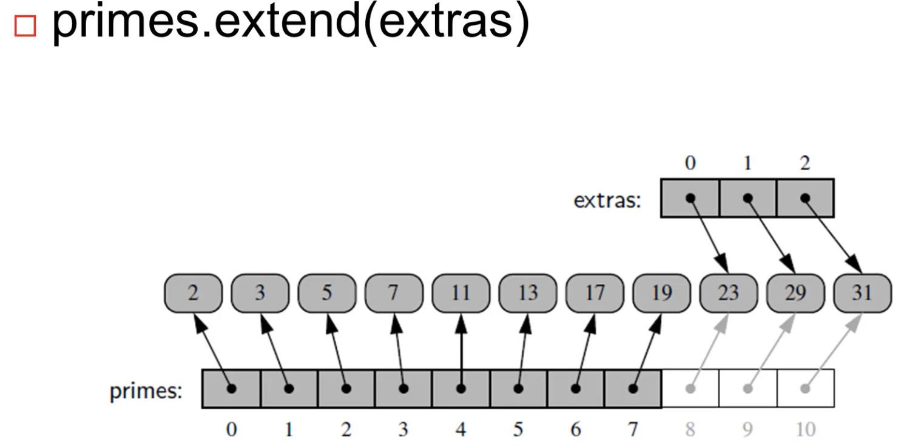

Index
Arrays or List
REFRENTIAL ARRAYS
------------------------------
• A List in Python is dynamic arrays where size of the arrays can change dynamically according to the number of elements it contains.
• It can store any kind of data types.
HOW THE SIZE OF DYNAMIC ARRAY GROWS ?

> The new arrays grows twice the size of the filled array.
> when the old arrays is filled, python creates a new array which is twice the size of the old filled array.
> Then all the references of the objects(not actual objects from the old arrays are copied to the new array.
> finally reference of the old array is copied the new array and then new array becomes the old array with larger capacity.
> Look at Justification :
!/usr/bin/python3
'''
Demonstrating How the size of a list grows dynamicaly
when the elements in the list increases at run time.
'''
import sys
n = 15 # no. being appended to the list one by one
myList = []
for i in range(n):
currentLength = len(myList)
actualSize = sys.getsizeof(myList)
print("Current Length of list is %d, and its Size in bytes is %d" %
(currentLength, actualSize))
myList.append(n)
'''
Demonstrating How the size of a list grows dynamicaly
when the elements in the list increases at run time.
'''
import sys
n = 15 # no. being appended to the list one by one
myList = []
for i in range(n):
currentLength = len(myList)
actualSize = sys.getsizeof(myList)
print("Current Length of list is %d, and its Size in bytes is %d" %
(currentLength, actualSize))
myList.append(n)
Example 0: prime = [2,3,5,7,11,13,17,19]
> It means that list has been created which stores 8 references in contigious memory, which points to those objects(list number) which can be anywhre in the memory.
> The objects need not be in contigious memory.
Example 1:
> Actually in simple words, Reference slicing is taking place here instead of objects slicing. The number of objects (7,11,13) in them memory is still same/constant.
> A new list has been created with same references so that those references can point to the same exact objects to avoid duplicate objects and memory wastage.
> Now when temp[2] = 15 is executed, then new reference which points to object 15 is assigned to the index 2.
> It's NOT like object 15 is getting stored at index 2. But it generally assumed like that a higher level abstract to simply things.
Example 2 :
> It creates a list with 8 copies of same references which points to 0.
> when an element in the list(Counters) is modified, it just creates new objects as per operation and assigns its reference to the same index in list(Counter).
> The operation doesn't modifies the existing object(0) which can be very costly so it creates new object and has to change only one reference other references in the list remains same.
Example 3:

> Same story in this case also: When primes list is extended with extras list, the size of primes list is increased and references from the extras list is copied to the increased part of the list.
> Again remember it's not actual objects/list is copied to the increased portion of the primes list because this can cause duplicacy of the same objects.
TAKE AWAY: python stores only one copy of one unique objects to avoid wastage of memory and duplicacy. If the same objects need to be copied,assigned then its reference is copied not the object.